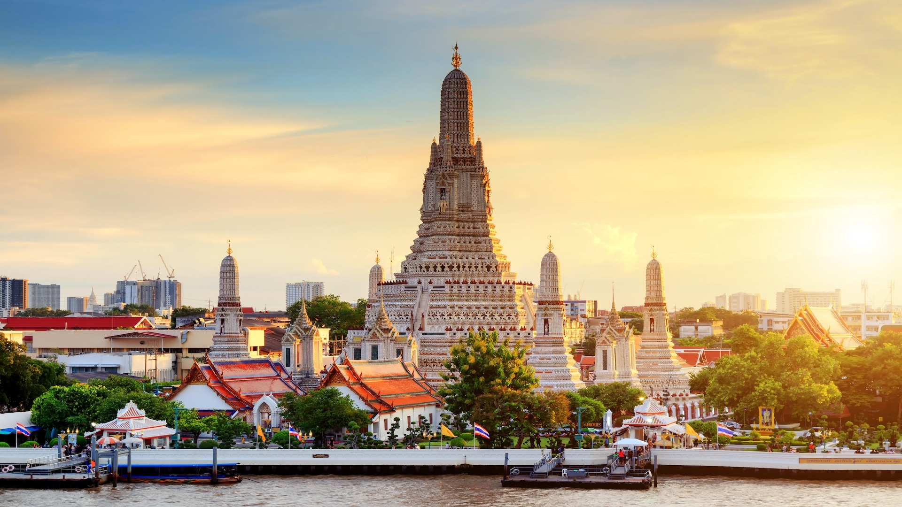
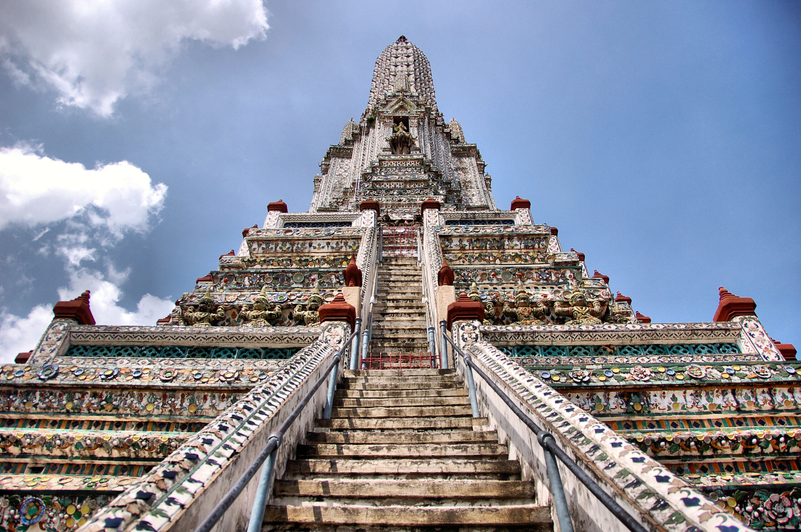
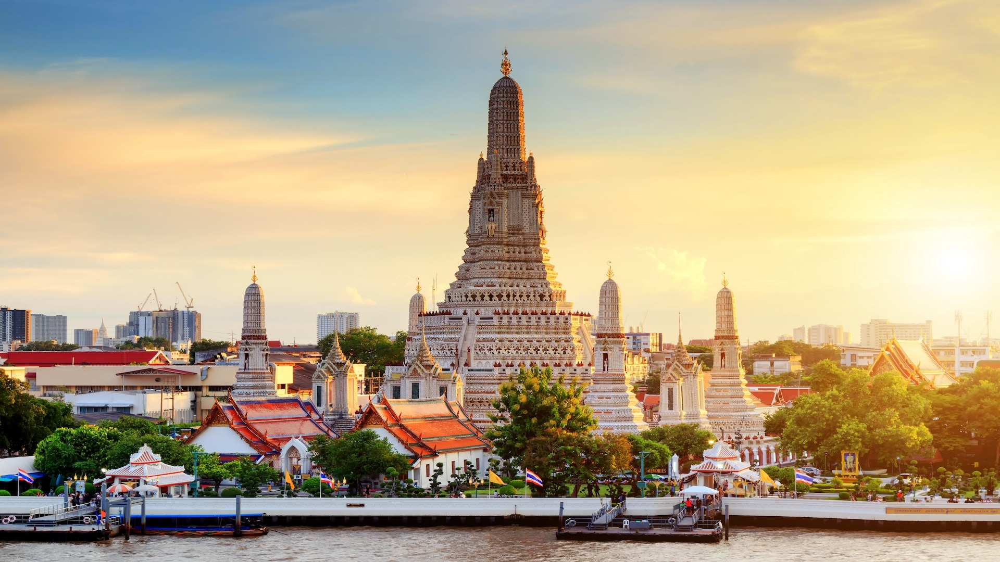
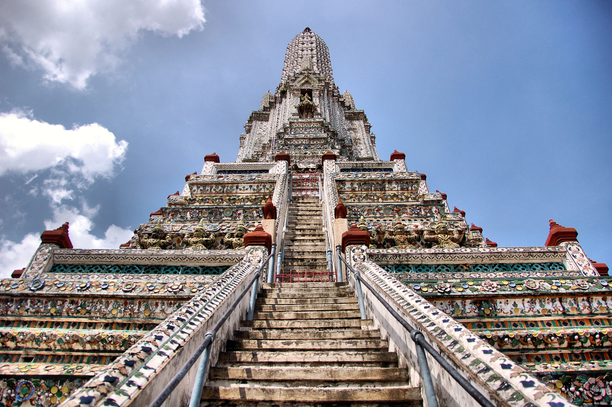

Wat Phra Kaew is Thailand’s most sacred temple, housing the Emerald Buddha, a revered statue of Buddha. The temple is a masterpiece of Thai architecture and is part of the Grand Palace complex.
• Opening Hours: Daily 8:00 AM - 3:30 PM
• Distance from the Hotel: About 35 km / 45 minutes
Wat Arun is one of Bangkok’s most iconic temples, situated along the Chao Phraya River. The temple is famous for its stunning architecture and panoramic views of the river, especially at sunset.
• Opening Hours: Daily 8:00 AM - 5:30 PM
• Distance from the Hotel: About 35 km / 45 minutes
 


